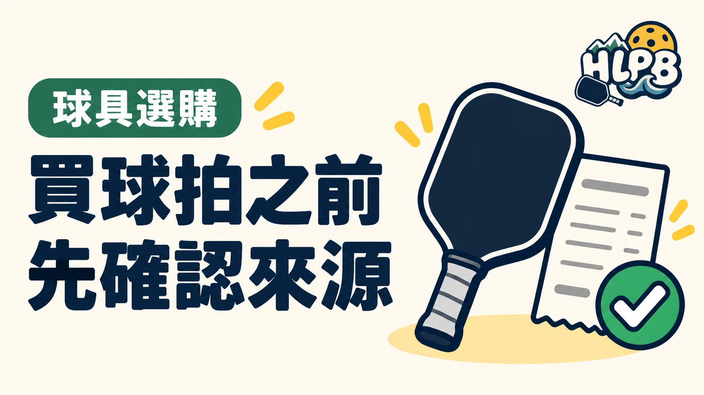

看到喜歡的球拍，先別急著付款。除了規格和價格，也要知道這支拍從哪裡來、出了問題找誰。
公司貨，要確認哪些資料？
建議優先選擇品牌官方，或能查證的授權經銷通路。商品標示「公司貨」時，也要進一步確認：
- 臺灣代理商或進口商是誰？
- 能否提供購買證明？
- 保固由哪個單位受理？
- 是否需要登錄，期限與範圍是什麼？
公司貨不是只看商品頁上的三個字，而是要有清楚的來源與售後窗口。
先核對保固，別直接套用國外條款
有些品牌對購買通路、購買者身分及登錄期限設有保固條件，不能直接拿國外官網的保障套用在臺灣商品上。
認證、真偽與價格，要分開看
拍上的認證標示不能單獨證明真偽；價格便宜，也不能直接認定是假貨。遇到資料不完整、來源說不清楚的商品，先向品牌或當地代理商確認，再決定是否購買。
買得安心，不只是拿到球拍，也包括日後有人能協助處理問題。
官方通路、公司貨與平行輸入，先分清楚
品牌官網或品牌公開列出的授權據點，是核對通路身分的起點。商品寫公司貨時，仍要知道由誰進口、誰提供在臺服務。平行輸入則要個別確認來源與售後，不能直接等同假貨，也不能自行推定享有當地代理商保固。這些名稱應連同可查證資料看。
| 付款前要取得 | 要能回答的問題 |
|---|---|
| 品牌、完整型號與版本 | 實際收到的是否與商品頁相同 |
| 販售者與供貨來源 | 是否能從品牌或代理商公開資料核對 |
| 購買證明及保固條件 | 受理單位、期限、登錄與排除項目為何 |
| 問題處理方式 | 新品異常、使用後故障與退換貨各找誰 |
認證清單不能拿來證明賣家真偽
器材核准清單處理的是型號是否符合相應規範，並不是每個賣場、每支實物或每張購買證明的身分驗證。確認通路和確認參賽資格應分開做；同樣地，商品價格高低也不能單獨用來判斷真偽。
收到球拍後，留存哪些資料比較實用？
核對型號、厚度、外觀與附件，保存訂單、收據及當時的保固說明。如果商品有序號或原廠登錄流程，再依該品牌要求完成。遇到來源說不清楚、無法提供售後窗口的商品，先停止付款或使用，將疑問交給品牌或購買通路確認。本文提供選購檢查，個別保固仍以實際條款為準。
來源：JOOLA 美國與加拿大保固條款 ↗。資料核對：2026/10/19；選購檢查建議由 HLPB 編輯整理。
最後查證：2026-10-19｜資料來源：HLPB 編輯整理與正文所列官方資料
返回文章列表